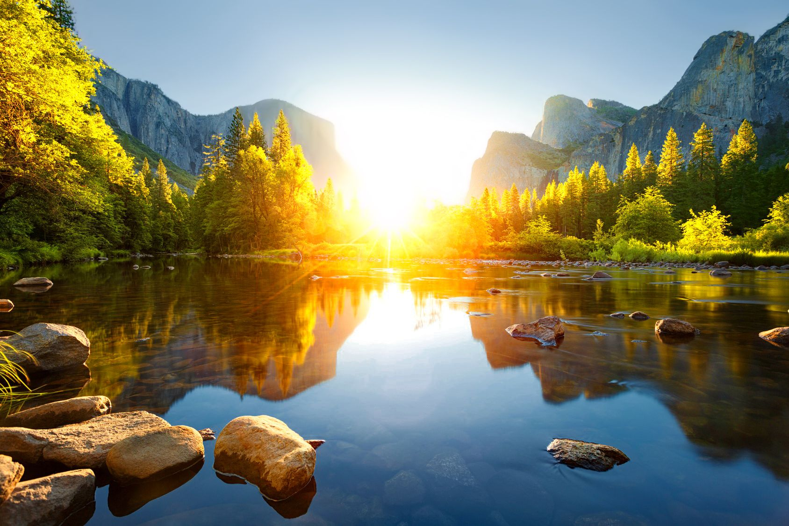

Добро пожаловать!
Привет! Это мой личный сайт о том, как я провёл лето 2025. Здесь я собрал воспоминания, впечатления и самые яркие моменты этих месяцев.
На страницах сайта вы найдёте:
- 📅 Мой календарь событий и небольшая история из поездки;
- 🎬 Фильмы, которые я посмотрел;
- 💻 Чем я занимался в мире IT и как прокачивал навыки;
- 😠 Немного страданий
- 🏆 И, конечно же, чем я могу похвастаться!
Лето — это маленькая жизнь. И я хочу, чтобы этот сайт стал напоминанием обо всех эмоциях, встречах и открытиях, которые оно подарило 🌞.
Поездка
Лето началось с того, что я просто вышел из дома и решил: «Хочу приключений». В рюкзаке лежали карта, гитара и пара вещей на выживание — остальное я оставил ветру. Дорога звала, и я понял: это не просто поездка, это моё маленькое море, и я — новый пират на своём велофрегате.
Первый город встретил меня шумными улочками и светом фонарей, которые отражались в мокрой брусчатке. Я бродил по переулкам, заходил в старые кафе, слушал истории прохожих и смеялись над собой вместе с ними. Каждое место будто кричало: «Здесь есть свобода!»
Я прыгал по городу на велосипедах, через мосты и сквозь парки, как будто у меня была миссия: найти что-то необычное. И находил: старые заброшенные здания, граффити, за которыми скрывались целые истории; музыкальные импровизации на улицах, где я сам мог стать частью оркестра; маленькие закоулки, где воздух пахнул солью и приключением.
Ночи я проводил под звёздами. В палатке, на берегу реки, я думал о том, что завтра будет ещё один день открытий. Иногда приходили друзья, которых я встречал по пути, и мы сидели у костра, пели песни, смеялись и делились секретами, словно мы уже давно команда пиратов, ищущих своё сокровище.

Лето пролетело, как ветер, но каждая минута осталась в памяти, как яркий кадр в фильме. Когда я вернулся домой, город был тем же, но я сам — другим. Теперь я знаю: приключения не всегда на горизонте, иногда они внутри тебя, стоит лишь выйти за дверь и идти навстречу ветру.
Фильмы, которые я посмотрел этим летом
- Легенда — 2015 — ★★★★☆
- Оружейный барон — 2005 — ★★★★★
- Гнев Человеческий — 2021 — ★★★★☆
- Джентельмены — 2019 — ★★★★★
- Шерлок Холмс — 2009 — ★★★★☆
- Шерлок Холмс 2 — 2011 — ★★★★★
- Волк с Уолл-стрит — 2013 — ★★★★★
- Операция «Фортуна»: Искусство побежать — 2022 — ★★★★☆
- Дэдпул и Росомаха — 2025 — ★★★★★
- Министерство неджентльменских дел — 2024 — ★★★★★
- Переводчик — 2022 — ★★★★★
- Револьвер — 2005 — ★★★★☆
- Superнянь — 2014 — ★★★★☆
- Бойцовский клуб — 1999 — ★★★★★
- Остров проклятых — 2009 — ★★★★★
- Шоу Трумана — 1998 — ★★★★☆

- Иллюзия обмана — 2013 — ★★★★★
- Иллюзия обмана 2 — 2016 — ★★★★★
- Человек из Стали — 2013 — ★★★★☆
- Большой Стэн — 2007 — ★★★★★
- Главы Государств — 2025 — ★★★☆☆
- Бэтмен против Супермена — 2016 — ★★★★☆
- Снайдеркат — 2021 — ★★★★★
- Ручная Кладь — 2024 — ★★★★☆
- Одиннадцать друзей оушена — 2001 — ★★★★★
- Между небом и землей — 2005 — ★★★★☆
- Лжец, Лжец — 1997 — ★★★★☆
- Кабельщик — 2024 — ★★★★☆
- Судья — 2014 — ★★★★☆
- Законопослушный гражданин — 2009 — ★★★★★
- КВМ — Три фазы — ★★★★★
IT — Летняя практика
Это лето для меня оказалось не только временем отдыха, но и настоящей школой выживания в мире IT. Я впервые всерьёз взялся за разработку сайта. Начиналось всё довольно скромно — белый экран, пара строчек HTML и огромное желание сделать «что-то своё».
С каждым днём сайт обрастал новыми разделами, стилями, кнопками и даже музыкой. CSS оживлял страницы, добавлял анимации и превращал сухой текст в историю с атмосферой. А JavaScript стал настоящей магией, которая позволила сделать сайт интерактивным.
Иногда это было похоже на строительство замка из песка: вроде и хрупко, и легко разрушается, но результат вдохновлял продолжать дальше. Лето подарило мне уверенность — я могу создавать!

Страдания
Куда же без них! Лето было не только про солнце и радость, но и про бесконечные сражения с кодом. Иногда казалось, что сайт живёт своей жизнью: кнопки не нажимались, стили ломались, а музыка отказывалась играть именно в тот момент, когда я радовался, что «всё работает».

Порой по экрану мелькали ошибки красного цвета, словно предупреждения судьбы: «Ты уверен, что справишься?». И каждый раз приходилось набирать команду из чая, терпения и пары бессонных ночей, чтобы снова вернуть проект к жизни.
Но именно в эти минуты я понял, что ошибки — это часть пути. Они злили, раздражали, но и закаляли. Ведь только падая, учишься вставать.
Похвастаться
Но все страдания были не зря. В конце концов сайт ожил! Теперь это не просто набор строк кода, а настоящий проект, в котором есть история, воспоминания и даже атмосфера моего лета.
Я горжусь тем, что смог довести всё до конца. Каждый раздел — это как трофей после долгого приключения: и IT-практика, и киношные открытия, и даже ошибки, которые стали моими лучшими учителями.
Иногда я смотрю на всё это и думаю: «Ничего себе, это действительно сделал я?». И знаете что? Да, сделал. И теперь у меня есть не просто воспоминания о лете, а целый сайт, которым можно делиться и который останется со мной навсегда.